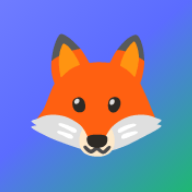
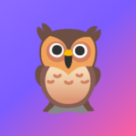

Vse je v slovenščini, brez oglasov in brez računa. Napredek ostane na napravi, na internet se ne pošilja nič.

5–15 let 🦊 Matko Matematika in branje – od štetja do enačb, Pitagorovega izreka in nalog v slogu Kenguručka.
5–15 let 🦉 Olly Angleščina – od prvih besed do trpnika in pogojnikov, z izgovorjavo in branjem.Vsaka igra dobi svojo ikono. Odpre se čez cel zaslon, brez naslovne vrstice, in deluje tudi brez interneta – primerno za avto ali počitnice. Ko je igra popravljena, se ob naslednjem odprtju s povezavo sama posodobi.